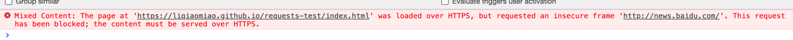

项目操作记录：混合内容
报错如下
Mixed Content: The page at 'https://liqiaomiao.github.io/requests-test/index.html' was loaded over HTTPS, but requested an insecure frame 'http://news.baidu.com/'. This request has been blocked; the content must be served over HTTPS.

原因是出现了混合内容
混合内容出现的情况：页面通过https加载，但是其他资源通过不安全的http加载，称之为混合内容
因为通过http和https内容以显示同一个页面
解决方式： 增加meta属性
<meta http-equiv="Content-Security-Policy" content="upgrade-insecure-requests">
目前页面加了这个meta属性，所以后面的iframe加载成功，感兴趣的可以删除，并找个https环境试试